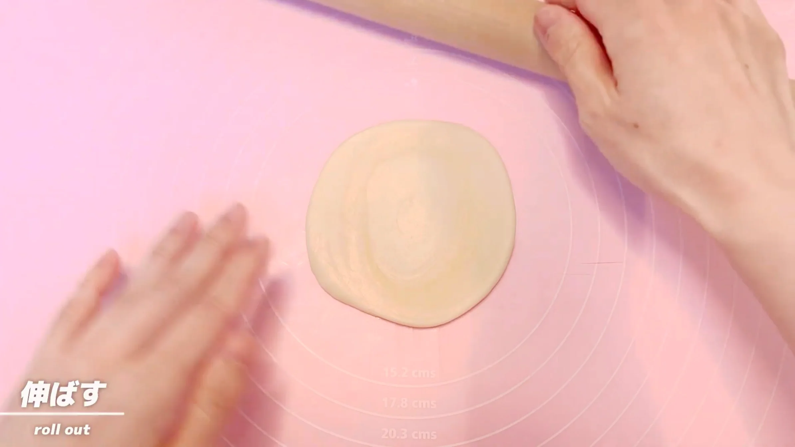
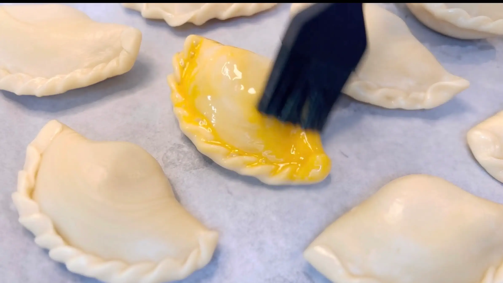
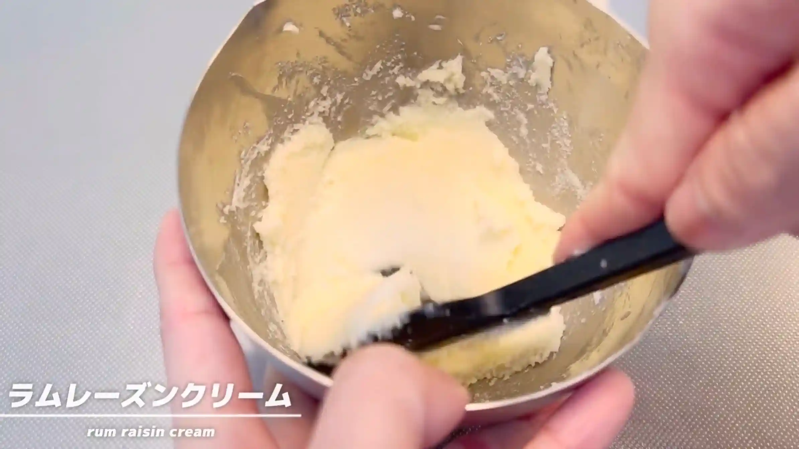

材料 10個分
※粉量を変えると自動計算されます
生地
バター玉
ラムレーズンクリーム
塗り用
作り方
生地
STEP 1
ボウルに生地の材料を入れ、ひとまとまりになるまで混ぜる（[動画 01:08]）
ボウルに薄力粉、強力粉、砂糖、サラダ油、水を入れ、混ぜます。ここでは生地をこね上げる必要はなく、材料が混ざってひとまとまりになればOKです。この後さらに手でこねるので、まずは粉気がなくなる程度まで混ぜ合わせます。
ボウルに薄力粉、強力粉、砂糖、サラダ油、水を入れ、混ぜます。ここでは生地をこね上げる必要はなく、材料が混ざってひとまとまりになればOKです。この後さらに手でこねるので、まずは粉気がなくなる程度まで混ぜ合わせます。
STEP 2
手で1分ほどこねる（[動画 01:23]）
手で1分ほどこね、生地を整えます。こね終わったらラップをして、次の工程まで乾燥しないようにしておきます。
手で1分ほどこね、生地を整えます。こね終わったらラップをして、次の工程まで乾燥しないようにしておきます。
STEP 3
ボウルにバター玉の材料を入れ、手でこすり合わせるように混ぜる（[動画 01:37]）
ボウルに薄力粉、強力粉、1㎝角に切ったバターを入れます。バターを指先でつぶしながら粉とこすり合わせ、バターと粉をなじませていきます。バターを完全に溶かすのではなく、粉と合わせてひとまとまりにするのがポイントです。
ボウルに薄力粉、強力粉、1㎝角に切ったバターを入れます。バターを指先でつぶしながら粉とこすり合わせ、バターと粉をなじませていきます。バターを完全に溶かすのではなく、粉と合わせてひとまとまりにするのがポイントです。
STEP 4
手で固めて丸める（[動画 01:51]）
混ぜ合わせたバター玉を手でぎゅっとまとめ、ひとつに丸めます。ラップをしておき、次の工程まで乾燥しないようにします。
混ぜ合わせたバター玉を手でぎゅっとまとめ、ひとつに丸めます。ラップをしておき、次の工程まで乾燥しないようにします。
STEP 5
生地とバター玉を室温で30分おく
生地とバター玉を室温に置いて、次の工程で伸ばしやすい状態にしておきます。30分を目安に、扱いやすい硬さになったら次へ進みます。
生地とバター玉を室温に置いて、次の工程で伸ばしやすい状態にしておきます。30分を目安に、扱いやすい硬さになったら次へ進みます。
STEP 6
フィリングを作る
STEP 7
生地とバター玉をそれぞれ5等分する
生地とバター玉をそれぞれ5等分し、丸めておきます。大きさをそろえておくと、後の工程で生地を伸ばしたときの厚みもそろえやすくなります。
生地とバター玉をそれぞれ5等分し、丸めておきます。大きさをそろえておくと、後の工程で生地を伸ばしたときの厚みもそろえやすくなります。
STEP 8
生地を広げ、バター玉を包む（[動画 04:01]）
生地を手で広げ、中央にバター玉をのせて包みます。バター玉がはみ出さないよう、生地をしっかり閉じておきます。
生地を手で広げ、中央にバター玉をのせて包みます。バター玉がはみ出さないよう、生地をしっかり閉じておきます。
STEP 9
生地を40㎝に伸ばす（[動画 04:36]）
バター玉を包んだ生地を、40㎝ほどまで細長く伸ばします。
バター玉を包んだ生地を、40㎝ほどまで細長く伸ばします。
STEP 10
生地を巻く（[動画 04:55]）
伸ばした生地を端から巻いていきます。5つの生地を全て巻き終わったら、次の工程へ進みます。
伸ばした生地を端から巻いていきます。5つの生地を全て巻き終わったら、次の工程へ進みます。
STEP 11
再び生地を40㎝に伸ばす（[動画 05:21]）
巻いた生地をもう一度40㎝ほどまで伸ばします。
巻いた生地をもう一度40㎝ほどまで伸ばします。
STEP 12
生地を巻く（[動画 05:39]）
再び端から生地を巻いていきます。ここまでの工程を繰り返すことで、生地の中にバターを含んだ層が重なっていきます。5つの生地を全て巻き終わったら、次の工程へ進みます。
再び端から生地を巻いていきます。ここまでの工程を繰り返すことで、生地の中にバターを含んだ層が重なっていきます。5つの生地を全て巻き終わったら、次の工程へ進みます。
STEP 13
半分にカットする
巻いた生地を半分にカットします。断面には生地とバターが重なった層ができているので、できるだけ形をつぶさないようにカットします。
巻いた生地を半分にカットします。断面には生地とバターが重なった層ができているので、できるだけ形をつぶさないようにカットします。
STEP 14
直径10㎝に伸ばす
カットした生地の断面を表に向け、めん棒を使って直径10㎝ほどに伸ばします。
カットした生地の断面を表に向け、めん棒を使って直径10㎝ほどに伸ばします。

STEP 15
フィリングを包み、成形する（[動画 06:50]）
中央にフィリングをのせ、生地を包んで三角形に整えます。そのまま包むと餃子のような形になってしまうため、中央をくぼませながらフィリングを包み、少しずつ形を整えます。
中央にフィリングをのせ、生地を包んで三角形に整えます。そのまま包むと餃子のような形になってしまうため、中央をくぼませながらフィリングを包み、少しずつ形を整えます。
STEP 16
天板にのせ、卵を塗る
成形した生地を天板に並べ、表面に卵を薄く塗ります。卵を塗ることで、焼き上がりにきれいな焼き色がつきます。
成形した生地を天板に並べ、表面に卵を薄く塗ります。卵を塗ることで、焼き上がりにきれいな焼き色がつきます。

STEP 17
オーブン180℃で30分焼く
表面がきつね色になるまで焼きます。今回のフィリングは焼成によって水分が抜け、しっかり固まる仕上がりになりました。フィリングをなめらかに仕上げたい場合は、焼きすぎないよう焼き色を確認しながら調整してください。
表面がきつね色になるまで焼きます。今回のフィリングは焼成によって水分が抜け、しっかり固まる仕上がりになりました。フィリングをなめらかに仕上げたい場合は、焼きすぎないよう焼き色を確認しながら調整してください。
フィリング
STEP 1
バターとグラニュー糖を混ぜる
バターをなめらかなクリーム状にしてからグラニュー糖を加え、全体が均一になるまで混ぜ合わせます。
バターをなめらかなクリーム状にしてからグラニュー糖を加え、全体が均一になるまで混ぜ合わせます。

STEP 2
卵を2回に分けて加え混ぜる
卵を一度に加えず、2回に分けて加えます。その都度しっかり混ぜ合わせ、全体がなめらかになってから次の卵を加えます。
卵を一度に加えず、2回に分けて加えます。その都度しっかり混ぜ合わせ、全体がなめらかになってから次の卵を加えます。
STEP 3
アーモンドパウダーを加え混ぜる
アーモンドパウダーを加え、粉っぽさがなくなるまで混ぜ合わせます。
アーモンドパウダーを加え、粉っぽさがなくなるまで混ぜ合わせます。
STEP 4
ラムレーズンを加え混ぜる
最後にラムレーズンを加え、全体が均一になるよう混ぜ合わせます。
最後にラムレーズンを加え、全体が均一になるよう混ぜ合わせます。
動画でチェック
おいしく作るためのワンポイントコラム
イタリア・ナポリの伝統菓子で「ひだを重ねた葉」という意味を持つ『スフォリアテッラ』。貝殻のような形と何層にも重なったパリパリ生地が特徴で、中にはリコッタチーズやチョコなどの甘いフィリングが詰まっています。私は以前、箱根ガラスの森美術館で初めて食べてその美味しさに大感激！おうちで再現したくて調べたところ、本場ではパスタマシンで生地を極限まで薄く伸ばすのだそう。我が家にはパスタマシンがないため、今回はアジア圏のお菓子作りの技法（油脂玉を包む手法）を使って挑戦してみることに！作ってみて分かった気づきを「2つのポイント」としてまとめました。
① パスタマシンなしで挑む成形の工夫と苦戦
本場イタリアのスフォリアテッラは、パスタマシンなどで生地を極限まで薄く伸ばし、溶かしバター（またはラード）を塗りながらロール状に巻いて作ります。しかし今回のレシピでは、丸めた「バター玉」を「生地」で包んでから伸ばしていくという、アジア圏のパイ包みの製法で、道具がなくてもおうちで作れる工夫をしてみました。結果は、なんだか「餃子」のようなぷっくりした形にできあがりました。生地がやはり少し厚くなってしまうことと、最後の成形でフィリングを包んで三角形にするところが難しかったですね。こうなってくると、「もはや冷凍パイシートの方が上手くいったのでは？」という気もしてきましたが、バター玉を包んで伸ばすという工程がすごく楽しかったです。
② 水分が飛んだクリームの失敗とまさかの美味しさ
中に入れるフィリングは、大人な味わいのラムレーズンクリームにしてみました。しかし、焼き上がって食べてみると、クリームがカチカチに固まっていました。原因はオーブンで焼きすぎてしまったため、中のクリームの水分が飛んでしまったこと。ただ、中のクリームがまるでしっかり焼き上げたタルト（焼き菓子）のようになり、これはこれでものすごく美味しかったです！フィリングをなめらかに仕上げたい場合は、水分を保ちやすいカスタードやチーズ系にするのが良さそうですね！
生地のユニークな伸ばし方や、餃子風になってしまった成形の様子、そして焼き上がりのカチカチ感など、ぜひ動画で確認してみてください。大成功とはいきませんでしたが、たくさんの発見に満ちた本当に楽しいお菓子作りでした！
① パスタマシンなしで挑む成形の工夫と苦戦
本場イタリアのスフォリアテッラは、パスタマシンなどで生地を極限まで薄く伸ばし、溶かしバター（またはラード）を塗りながらロール状に巻いて作ります。しかし今回のレシピでは、丸めた「バター玉」を「生地」で包んでから伸ばしていくという、アジア圏のパイ包みの製法で、道具がなくてもおうちで作れる工夫をしてみました。結果は、なんだか「餃子」のようなぷっくりした形にできあがりました。生地がやはり少し厚くなってしまうことと、最後の成形でフィリングを包んで三角形にするところが難しかったですね。こうなってくると、「もはや冷凍パイシートの方が上手くいったのでは？」という気もしてきましたが、バター玉を包んで伸ばすという工程がすごく楽しかったです。
② 水分が飛んだクリームの失敗とまさかの美味しさ
中に入れるフィリングは、大人な味わいのラムレーズンクリームにしてみました。しかし、焼き上がって食べてみると、クリームがカチカチに固まっていました。原因はオーブンで焼きすぎてしまったため、中のクリームの水分が飛んでしまったこと。ただ、中のクリームがまるでしっかり焼き上げたタルト（焼き菓子）のようになり、これはこれでものすごく美味しかったです！フィリングをなめらかに仕上げたい場合は、水分を保ちやすいカスタードやチーズ系にするのが良さそうですね！
生地のユニークな伸ばし方や、餃子風になってしまった成形の様子、そして焼き上がりのカチカチ感など、ぜひ動画で確認してみてください。大成功とはいきませんでしたが、たくさんの発見に満ちた本当に楽しいお菓子作りでした！


今回は、イタリア・ナポリ名物のバリバリ食感おやつ『スフォリアテッラ』に挑戦します！貝殻のような美しい層を持つ伝統菓子を、おうちにある材料や道具で工夫して作ってみました。コラムでは、作ってみてわかった気づきを「2つのポイント」としてご紹介します。